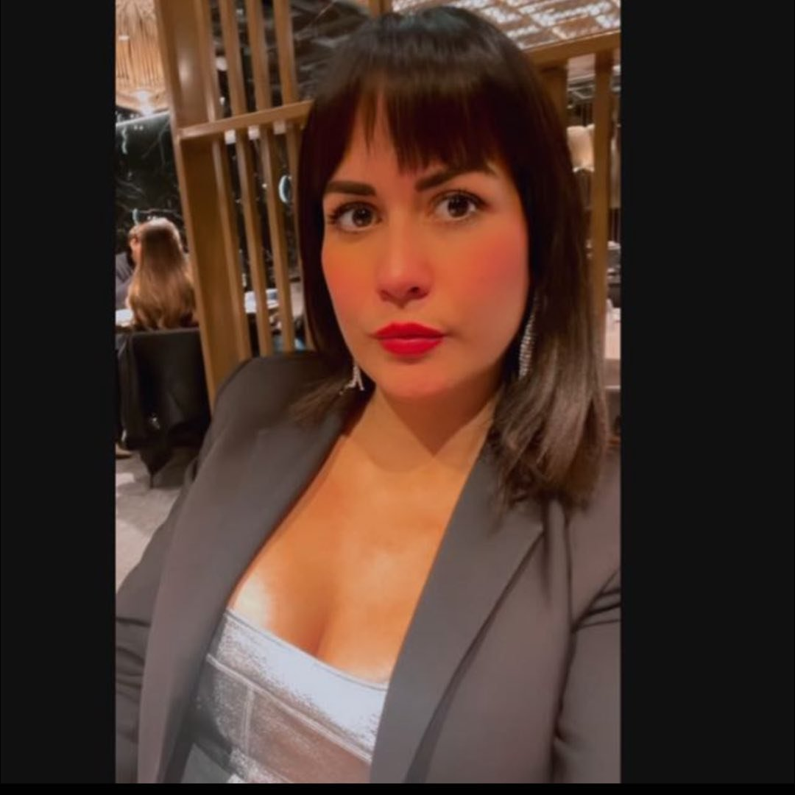

Trova il tuo amore a Bergamo.
Colpo di fulmine è nato per metterti in contatto con persone speciali nella tua area.
Cecilia Aristeguieta, appassionata di tecnologia e amore, ha fondato Colpo di fulmine vedendo la necessità di una piattaforma di incontri che capisse veramente il cuore e la cultura di Bergamo. Con un background in psicologia e tecnologia, Cecilia ha dedicato la sua carriera a migliorare il modo in cui le persone si connettono e creano relazioni importanti.
"Grazie a Colpo di fulmine ho trovato l'amore della mia vita a Bergamo." - Luca
CEO: Cecilia Aristeguieta
Sede: Bergamo, Italia
L'app di incontri "Colpo di Fulmine" è un servizio che facilita la connessione tra persone con interessi romantici e di amicizia. Tuttavia, è importante sottolineare che le informazioni fornite dagli utenti e le interazioni che avvengono all'interno dell'app sono di esclusiva responsabilità degli stessi utenti.
Accuratezza delle Informazioni: "Colpo di Fulmine" non garantisce la veridicità, accuratezza, completezza o attualità delle informazioni fornite dagli utenti. I profili, i messaggi e qualsiasi altro contenuto generato dagli utenti sono di esclusiva responsabilità degli utenti che li hanno creati.
Interazioni tra Utenti: "Colpo di Fulmine" non è responsabile delle interazioni tra gli utenti all'interno o all'esterno dell'app. Questo include, ma non si limita a, appuntamenti, incontri, comunicazioni e qualsiasi altra forma di interazione. Gli utenti devono agire con cautela e buon senso quando interagiscono con altri membri.
Sicurezza: Sebbene ci sforziamo di fornire un ambiente sicuro, "Colpo di Fulmine" non può garantire completamente la sicurezza dei suoi utenti. Si raccomanda vivamente agli utenti di prendere misure di sicurezza adeguate e di usare il proprio giudizio quando interagiscono con altri utenti.
Danni e Perdite: "Colpo di Fulmine" non sarà responsabile di alcun danno diretto, indiretto, incidentale, speciale, consequenziale o esemplare derivante dall'uso o dall'impossibilità di utilizzare l'app. Questo include, senza limitazione, danni per perdita di profitti, uso, dati o altre perdite intangibili.
Modifiche al Servizio: Ci riserviamo il diritto di modificare o interrompere l'app, temporaneamente o permanentemente, con o senza preavviso. "Colpo di Fulmine" non sarà responsabile nei confronti degli utenti o di terzi per qualsiasi modifica, sospensione o interruzione del servizio.
Utilizzando "Colpo di Fulmine", accetti i termini di questa clausola di esclusione di responsabilità. Se non sei d'accordo con qualche parte di questa clausola, ti chiediamo di non utilizzare la nostra app.
Per qualsiasi domanda o commento, puoi contattarci su Telegram.